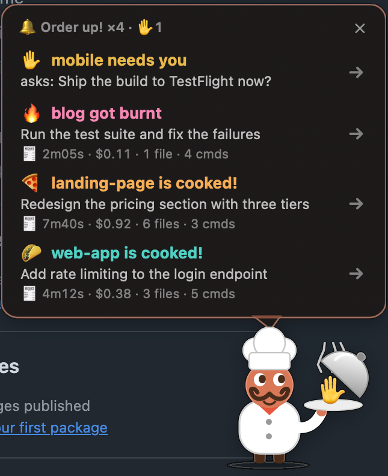
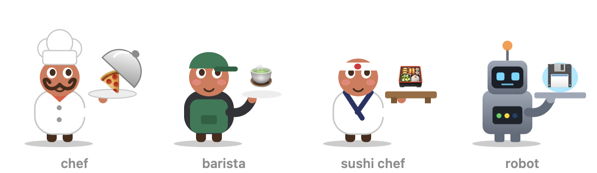
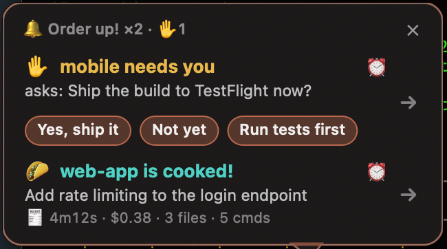
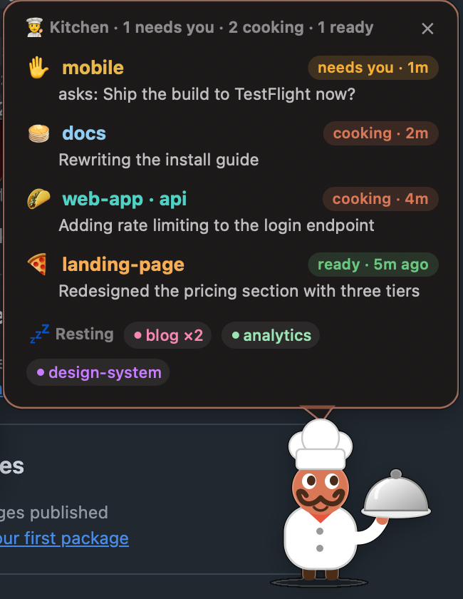

order-up a Claude Code mod that tells you when a session is done
Running several Claude Code sessions at once? When one finishes, or needs you, in a terminal tab you're not looking at, a tiny chef pops up on your Mac with the order. Answer it right there, snooze it, or click to jump back to that exact tab.
Install in two commands View on GitHub
What it does
- Order upA Claude Code turn finishes in a tab you're not watching: the chef rings a bell and shows what got done.
- Answer from the chefA session asks you a question with choices: click an answer on the chef, no tab switching.
- Burnt dishThe turn failed or its last command broke: the dish comes out burnt, so you know at a glance.
- The billEach order shows time taken, cost, files changed and commands run.
- The kitchenClick the menu bar chef to see every Claude Code session: cooking, needs you, ready or resting.
- SnoozeNot now? Snooze an order for 10 minutes and the chef brings it back.
Pick your character

The chef ("Order up!"), a barista ("Coffee's up!"), a sushi chef ("Irasshaimase!") or a robot ("Task complete"): each with its own words and dishes. Switch any time with /order-up set skin barista.
A closer look


Install
Needs macOS and Apple's Command Line Tools (xcode-select --install). In a terminal:
claude plugin marketplace add yugantar7/order-up claude plugin install order-up@order-up
Then start a new Claude Code session and run /order-up setup. It asks a few questions, builds the chef and serves a test order. Works with Terminal.app and iTerm2 (jumps to the exact tab), and Ghostty, Warp, VS Code, Cursor and the Claude desktop app (brings the window forward).
Questions
How do I get notified when Claude Code finishes?
Install order-up. When a Claude Code turn that ran for a while (30 seconds by default) finishes in a tab you're not looking at, the chef pops up with the result; click it to jump back to that tab.
What is a Claude Code mod?
A mod changes Claude Code itself: how it looks, how it behaves, or what it can do. Mods are plugins with hooks; order-up is one, installed with two commands.
Can I answer Claude Code's questions without switching tabs?
Yes. When a session asks a question with choices, order-up shows them as buttons; click one and the session gets your answer. Permission prompts still need the tab.
How do I keep track of many Claude Code sessions at once?
Click the menu bar chef to see the kitchen: every session, whether it's cooking, needs you, is ready or resting, and what it's doing. Click one to jump to it.
Does it work on Windows or Linux?
No, order-up is macOS only: the chef is a native Mac window.
Is it free? What does it collect?
Free and open source (MIT). It makes no network calls of its own and only reads and writes ~/.claude/order-up/.